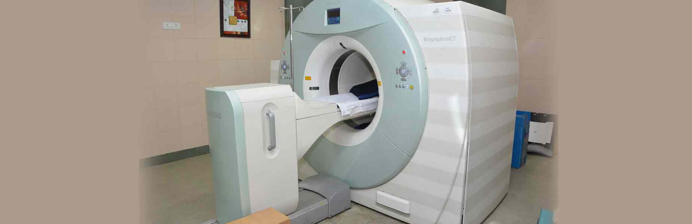
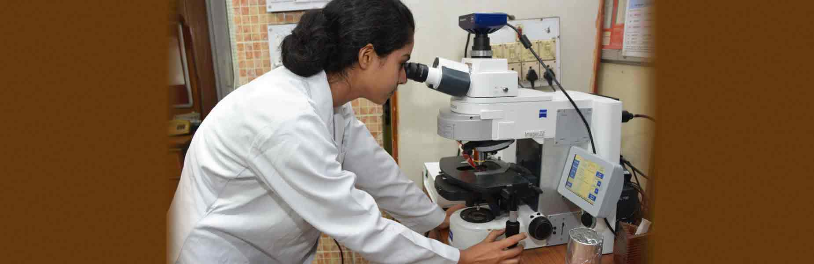
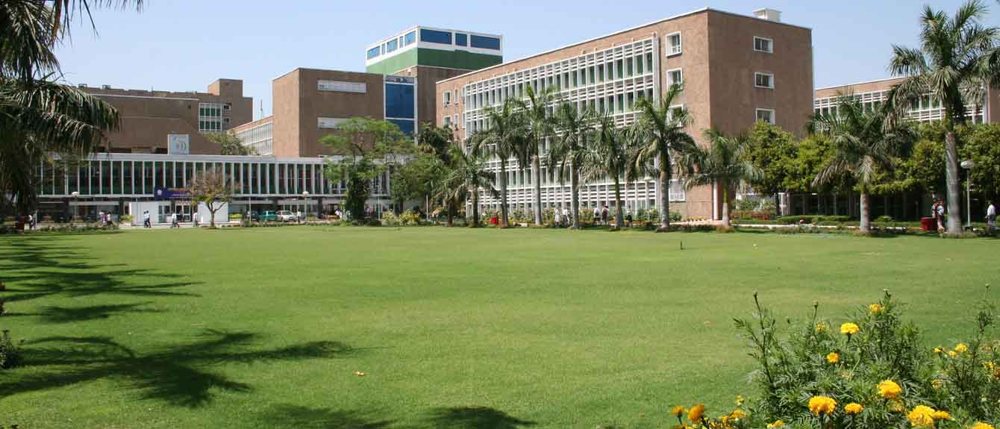
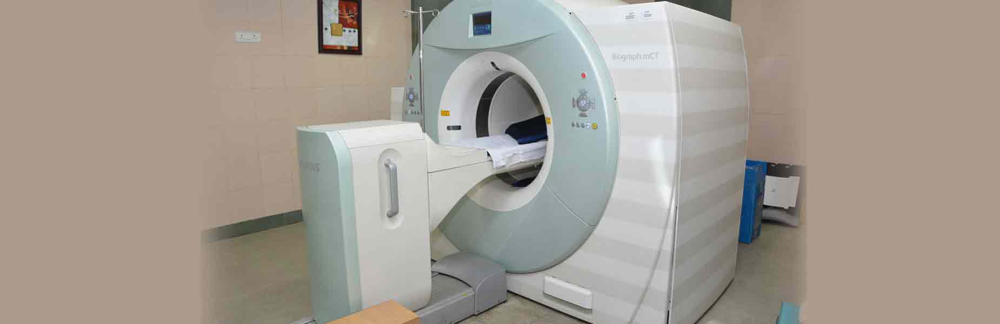
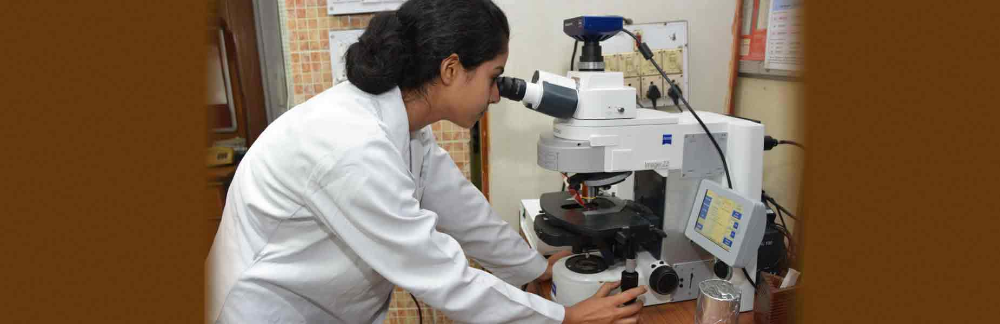
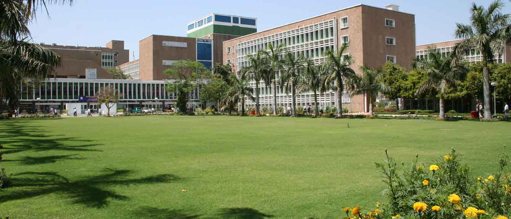

All-India Institute of Medical Sciences was established as an institution of national importance by an Act of Parliament with the objects to develop patterns of teaching in Undergraduate and Post-graduate Medical Education in all its branches so as to demonstrate a high standard of Medical Education in India; to bring together in one place educational facilities of the highest order for the training of personnel in all important branches of health activity; and to attain self-sufficiency in Post-graduate Medical Education.
All Copyrigtht 2018 Reserved : www.aiims.edu